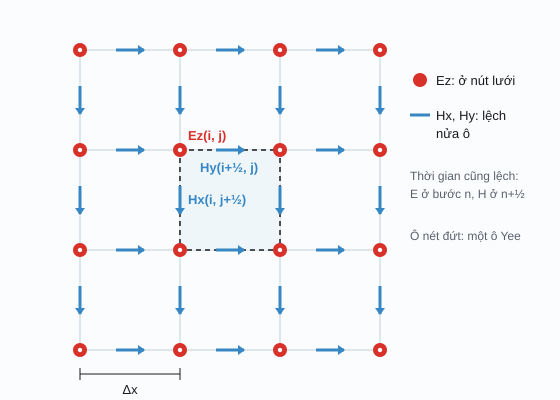

Sinh điện từ / Phần 5
Đo liều
Đo liều điện từ (electromagnetic dosimetry) xác định liều lượng mà mô thực sự nhận được, tức là trả lời câu hỏi: khi cơ thể ở trong một trường điện từ bên ngoài, trường bên trong mô lớn bao nhiêu, và mô hấp thụ bao nhiêu năng lượng? Ở tần số thấp, đại lượng quan trọng là điện trường cảm ứng (vì nó kích thích thần kinh); ở tần số cao là SAR (vì nó làm nóng mô). Không đo được trực tiếp bên trong người, nên ta dùng mô phỏng số: FDTD và FEM.
Điện trường cảm ứng và mật độ dòng
Ở tần số thấp (dưới khoảng 100 kHz), từ trường bên ngoài đi xuyên qua cơ thể gần như nguyên vẹn. Theo định luật Faraday, từ trường biến thiên sinh ra trong mô một điện trường cảm ứng (induced electric field) \(E_i\), và từ đó một mật độ dòng cảm ứng (induced current density) \(J = \sigma E_i\). Nếu Ei đủ lớn, nó kích thích dây thần kinh và cơ; ở mức thấp hơn, nó gây hiện tượng chớp sáng ở võng mạc (magnetophosphene). Hướng dẫn ICNIRP 2010 giới hạn chính Ei (trước 2010 là J).
Mô hình đơn giản nhất: một đĩa mô dẫn điện đồng nhất bán kính R, đặt vuông góc với từ trường đều biên độ B, tần số f. Áp dụng định luật Faraday cho đường tròn bán kính r bên trong đĩa:
Ei: điện trường cảm ứng (V/m), tăng tuyến tính từ tâm ra mép; B: mật độ từ thông (T); f: tần số (Hz); σ: độ dẫn điện của mô (S/m). Ei không phụ thuộc σ (trong mô hình đĩa đồng nhất), nhưng J thì có. Các trị số đều là trị hiệu dụng (rms) nếu B là trị hiệu dụng.
Điện trường cảm ứng trong đĩa mô
Chọn nguồn từ trường, tần số và kích thướcMô hình đĩa đồng nhất cho giá trị lớn nhất ở mép đĩa. Trong cơ thể thật, dòng điện dồn vào các mô dẫn điện tốt và vòng qua các mô dẫn kém, nên Ei cục bộ có thể khác vài lần. Đó là lý do các hướng dẫn chuyển từ "giới hạn cơ bản" (bên trong mô) sang "mức tham chiếu" (đo được bên ngoài) bằng mô phỏng số trên mô hình người chi tiết.
SAR và SA
Từ khoảng 100 kHz trở lên, tác động chính là làm nóng mô. Công suất điện từ bị hấp thụ trên mỗi kilogam mô gọi là tỉ lệ hấp thụ riêng (specific absorption rate, SAR), đơn vị W/kg. Lấy tích phân SAR theo thời gian ta được năng lượng hấp thụ riêng (specific absorption, SA), đơn vị J/kg, dùng cho các xung ngắn (ví dụ radar), nơi tổng năng lượng trong một xung quan trọng hơn công suất trung bình.
σ: độ dẫn điện của mô ở tần số đang xét (S/m); Erms: điện trường hiệu dụng trong mô (V/m); ρ: khối lượng riêng của mô (kg/m³, khác với điện trở suất ρ ở phần 1); c: nhiệt dung riêng (J/(kg·K)); wb: lưu lượng máu tưới (kg/(m³·s)); cb: nhiệt dung riêng của máu. Máu mang nhiệt đi nên nhiệt độ không tăng mãi mà tiến tới một mức ổn định.
SAR, SA và nhiệt độ
Chọn mô, tần số, cường độ trường trong mô và thời gianFDTD: sai phân hữu hạn miền thời gian
Phương pháp sai phân hữu hạn miền thời gian (finite-difference time-domain, FDTD) giải trực tiếp hai phương trình curl của Maxwell (phần 3). Không gian được chia thành lưới ô vuông (hoặc khối lập phương) cạnh Δx; thời gian chia thành bước Δt. Thủ thuật của Kane Yee (1966) là đặt E và H lệch nhau nửa ô và nửa bước thời gian, để mỗi đạo hàm được tính bằng sai phân trung tâm. Sau đó, chỉ cần lặp: cập nhật H từ E, rồi cập nhật E từ H, hàng nghìn lần.
FDTD rất hợp với mô hình người dạng voxel (lấy từ ảnh MRI hay CT): mỗi voxel chỉ cần một bộ (εᵣ, σ). Đổi lại, mặt cong bị xấp xỉ thành bậc thang, và ô lưới phải nhỏ hơn khoảng 1/10 bước sóng trong mô.
Phương trình cho Hx, Hy có dạng tương tự với µ₀. Ở biên miền tính toán, cần một lớp hấp thụ (ở đây là lớp tổn hao khớp trở kháng, một dạng đơn giản của PML) để sóng đi ra không bị phản xạ ngược lại.

Mô phỏng FDTD: sóng phẳng chiếu vào mô
Lưới 1 mm, chạy ngay trong trình duyệtHãy để ý hai điều mà demo độ xuyên sâu ở phần 4 bỏ qua. Thứ nhất, sóng phản xạ một phần ở mỗi mặt phân cách, tạo sóng đứng (các dải sáng tối) ở phía trước mô và bên trong lớp mỡ. Thứ hai, với lớp mỡ có bề dày cỡ 1/4 bước sóng trong mỡ, năng lượng truyền vào cơ có thể tăng hoặc giảm đáng kể: kích thước cơ thể và cấu trúc lớp quyết định SAR, không chỉ riêng tính chất từng mô.
FEM: phương pháp phần tử hữu hạn
Phương pháp phần tử hữu hạn (finite element method, FEM) chia vùng tính toán thành các phần tử nhỏ (tam giác trong 2D, tứ diện trong 3D) có thể to nhỏ khác nhau và bám theo mặt cong của mô. Trong mỗi phần tử, nghiệm được xấp xỉ bằng một đa thức đơn giản (ở đây là hàm tuyến tính). Bài toán được viết lại dưới dạng yếu (weak form), dẫn tới một hệ phương trình tuyến tính lớn nhưng thưa \(K\mathbf{V} = \mathbf{b}\).
FEM đặc biệt mạnh cho các bài toán tần số thấp và gần tĩnh: kích thích dòng một chiều qua sọ (tDCS), TMS, EEG/MEG, cấy ghép điện cực. Ví dụ dưới đây giải phương trình \(\nabla\cdot(\sigma\nabla V) = 0\) trên mặt cắt đầu gồm bốn lớp: da đầu, xương sọ, dịch não tủy và não.
V: điện thế; v: hàm thử; K(e): ma trận độ cứng của phần tử tam giác e, diện tích Ae, với b, c tính từ tọa độ ba đỉnh. Hệ được giải bằng phương pháp gradient liên hợp (conjugate gradient).
Mô phỏng FEM: dòng điện tDCS trong đầu
Lưới tam giác bám theo các lớp môSo sánh FDTD và FEM
| Tiêu chí | FDTD | FEM |
|---|---|---|
| Lưới | Ô vuông / lập phương đều; mặt cong thành bậc thang. | Tam giác / tứ diện không đều, bám theo mặt cong; dày ở chỗ cần chi tiết. |
| Miền giải | Miền thời gian; một lần chạy với xung cho kết quả ở nhiều tần số. | Thường là miền tần số hoặc bài toán tĩnh; mỗi tần số giải một lần. |
| Phép tính | Lặp tường minh, không cần giải hệ phương trình; dễ song song trên GPU. | Giải hệ tuyến tính thưa lớn (bộ giải lặp hoặc trực tiếp). |
| Bộ nhớ | Tỉ lệ với số ô; rất lớn khi cần ô nhỏ ở mọi nơi. | Chỉ tăng ở nơi lưới mịn. |
| Thế mạnh trong đo liều | SAR ở tần số RF và vi sóng trên mô hình voxel người (điện thoại, MRI, 5G). | Tần số thấp và gần tĩnh: tDCS, TMS, EEG/MEG, cấy ghép, mô có hình học phức tạp. |
| Hạn chế | Sai số bậc thang ở mặt cong; Δx bị giới hạn bởi bước sóng nhỏ nhất. | Tạo lưới 3D chất lượng tốt cho cơ thể người rất tốn công. |
| Phần mềm ví dụ | Sim4Life, XFdtd, CST (một phần), openEMS, Meep. | COMSOL, SimNIBS, ROAST, FEniCS. |
Giới hạn phơi nhiễm ICNIRP
Ủy ban quốc tế về bảo vệ bức xạ không ion hóa (ICNIRP) đặt giới hạn ở hai tầng. Giới hạn cơ bản (basic restrictions) áp dụng cho đại lượng bên trong cơ thể, gắn trực tiếp với tác động sinh học (Ei, SAR, SA), nhưng không đo được trực tiếp. Mức tham chiếu (reference levels) là các đại lượng bên ngoài đo được (E, B, mật độ công suất), suy ra từ giới hạn cơ bản bằng mô phỏng đo liều với biên an toàn. Tuân thủ mức tham chiếu thì chắc chắn tuân thủ giới hạn cơ bản; vượt mức tham chiếu thì cần đánh giá kỹ hơn, chưa chắc đã vượt giới hạn cơ bản. Giới hạn cho công chúng thường thấp hơn cho người lao động 5 lần.
Tần số thấp: ICNIRP 2010 (ở 50 Hz)
| Loại | Đại lượng | Người lao động | Công chúng |
|---|---|---|---|
| Giới hạn cơ bản | Ei trong mô thần kinh trung ương ở đầu (não, võng mạc) | 0,1 V/m | 0,02 V/m |
| Giới hạn cơ bản | Ei trong mọi mô của đầu và thân | 0,8 V/m | 0,4 V/m |
| Mức tham chiếu | Mật độ từ thông B | 1000 µT | 200 µT |
| Mức tham chiếu | Điện trường bên ngoài E | 10 kV/m | 5 kV/m |
Tần số cao: ICNIRP 2020 (100 kHz – 300 GHz)
| Loại | Đại lượng | Dải tần | Người lao động | Công chúng |
|---|---|---|---|---|
| Giới hạn cơ bản | SAR trung bình toàn thân (trung bình 30 phút) | 100 kHz – 300 GHz | 0,4 W/kg | 0,08 W/kg |
| Giới hạn cơ bản | SAR cục bộ đầu và thân (trung bình 10 g, 6 phút) | 100 kHz – 6 GHz | 10 W/kg | 2 W/kg |
| Giới hạn cơ bản | SAR cục bộ tay chân (10 g, 6 phút) | 100 kHz – 6 GHz | 20 W/kg | 4 W/kg |
| Giới hạn cơ bản | Mật độ công suất hấp thụ Sab (trên 4 cm²) | 6 – 300 GHz | 100 W/m² | 20 W/m² |
| Mức tham chiếu | Mật độ công suất sóng tới, toàn thân | 2 – 300 GHz | 50 W/m² | 10 W/m² |
Lịch sử
- 1960
Ray Clough: "phần tử hữu hạn"
Ý tưởng chia vùng thành các mảnh nhỏ có từ Courant (1943) và các kỹ sư hàng không thập niên 1950; Clough đặt tên "finite element method" năm 1960. Phương pháp được đưa vào điện từ học từ cuối thập niên 1960.
- 1966
Kane Yee: lưới lệch
Yee công bố thuật toán giải phương trình Maxwell bằng lưới E, H lệch nhau nửa ô, nền tảng của mọi phần mềm FDTD ngày nay. Allen Taflove đặt tên "FDTD" năm 1980.
- 1966
Tiêu chuẩn an toàn đầu tiên
Tiêu chuẩn Mỹ USASI C95.1 (1966) giới hạn mật độ công suất vi sóng ở 10 mW/cm², dựa trên giả định tăng nhiệt, sau những lo ngại về sức khỏe của người vận hành radar.
- 1988
FDTD trên mô hình người
Dennis Sullivan, Om Gandhi và Allen Taflove dùng FDTD tính SAR trong mô hình người gồm hàng chục nghìn ô, mở đầu cho đo liều tính toán (computational dosimetry) trên mô hình giải phẫu.
- 1998
ICNIRP 1998
ICNIRP (thành lập năm 1992) ban hành hướng dẫn cho 0–300 GHz với SAR toàn thân 0,08 W/kg cho công chúng, được nhiều nước áp dụng. Bản cập nhật cho tần số thấp ra năm 2010, cho RF năm 2020.
- 2010
Gia đình ảo (Virtual Family)
Quỹ IT'IS và FDA giới thiệu các mô hình người chi tiết (hơn 80 loại mô, độ phân giải dưới 1 mm) dựng từ ảnh MRI, nay là chuẩn cho mô phỏng SAR của MRI và thiết bị không dây.
Tài liệu tham khảo
- ICNIRP, "Guidelines for limiting exposure to time-varying electric and magnetic fields (1 Hz – 100 kHz)", Health Physics 99 (2010) 818–836; "Guidelines for limiting exposure to electromagnetic fields (100 kHz to 300 GHz)", Health Physics 118 (2020) 483–524. icnirp.org.
- K. S. Yee, "Numerical solution of initial boundary value problems involving Maxwell's equations in isotropic media", IEEE Trans. Antennas Propag. 14 (1966) 302–307.
- A. Taflove, S. C. Hagness, Computational Electrodynamics: The Finite-Difference Time-Domain Method, Artech House.
- H. H. Pennes, "Analysis of tissue and arterial blood temperatures in the resting human forearm", J. Appl. Physiol. 1 (1948) 93–122.
- A. Thielscher, A. Antunes, G. B. Saturnino, "Field modeling for transcranial magnetic stimulation: a useful tool to understand the physiological effects of TMS?", IEEE EMBC 2015 (SimNIBS); giá trị độ dẫn điện mặc định dùng trong demo FEM.
- IT'IS Foundation, Tissue Properties Database (khối lượng riêng, nhiệt dung, lưu lượng máu).